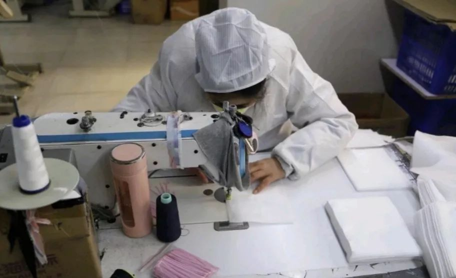
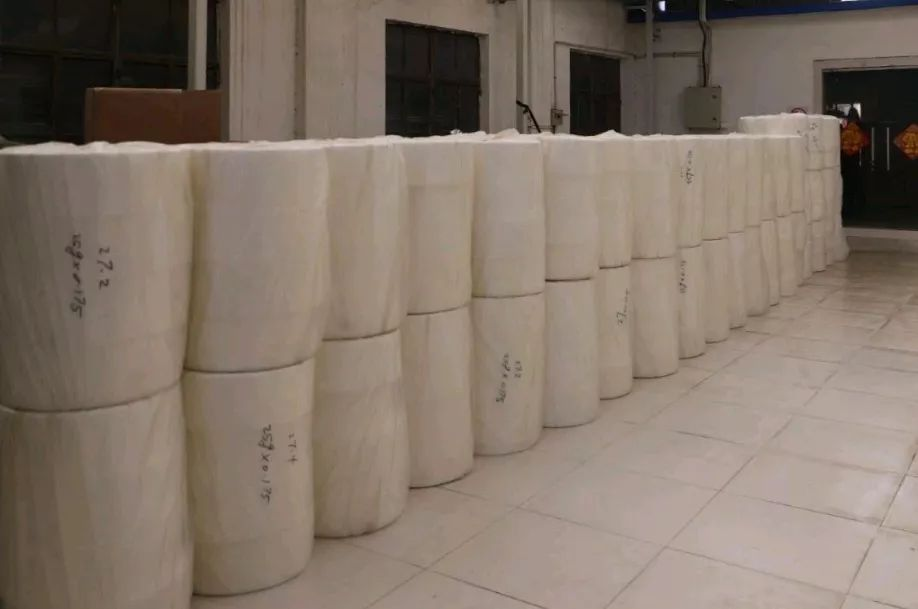

封面报道之产业篇|仙桃：口罩生产过山车
原文链接 备份链接 封面报道之产业篇： 荆门：消毒剂企业难复工 | 神农架：10名患者现林区 | 十堰：“东风城”亟待开工 1月3日新冠肺炎确诊患者44例的时候，湖北仙桃市口罩厂的老板李力总觉得会有事发生。此前，他已经在网上看到非典在武汉 …

“

- 疫 情 之 下 -
她们加班加点的多生产一片，老百姓就少一份因为口罩紧缺带来的恐慌；多生产一片，政府部门的抗疫情压力就会减轻一份；多生产一片，人与人之间就多了一个传递守护和关心的桥梁。
”
1
作为一个只有79名职工的服装厂员工，肖燕从来都没想到，有一天他们厂的人，从老板到员工，会在亲戚朋友、远亲旧邻眼里的地位那么高，直到2020年的2月8号。
因为，那天他们厂开始生产口罩了。
2月8号，老板在员工群发布通知，暂时只需要36个本地机工即可，其他员工的复工时间等通知。原本，已经做好复工准备的肖燕，转头继续做起了家务。这种准备好上班又不能上班的失落并没有持续多久，肖燕的班长很快给她来了电话：“明天7点半到班，自己带午饭。”
做口罩不仅需要机工，还需要剪线头、包装的辅工。肖燕从全国至今还在等通知的若干就业人员里率先以口罩辅工的职业身份，走出了家门，走进了自己的工作单位。
这是肖燕工作十几年来，最严格以及最复杂的一次复工。
她必须准备好复工材料以及个人轨迹证明材料。首先，要把身份证正面拍好了发到员工群里；其次，按照个人轨迹证明方法指导要求，将自己的活动轨迹发到员工群里。老板收集好员工的这两个材料后，随后统一交至街道企业复工指导组。指导组再进行审核。

图|复工必备材料之一个人轨迹证明材料
肖燕并不明白这个材料和她复工有什么关系。直到隔了两天，她的两个同事被劝返回家时，她才知道其意义。
第二天一大早，肖燕带着自己老公给自己备好的盒饭，戴好口罩后才拉开门。不到7点半，她就到厂里了。严格意义上来说，是到了厂门口了。
迎接她的是个穿着白色防护服、带着白色口罩，整张脸只露出两只乌溜溜眼睛的同事。平常热情开朗的同事，看到戴着口罩的肖燕走至跟前时，瞬间拘谨起来。
肖燕觉得有点滑稽，但这么严肃的事情，她不好开玩笑。同事给她测完体温，分发完口罩和防护服，指导她洗手消毒后，才放她进厂。整个过程中，两人的交谈不超过十句话。这些流程，也成为了肖燕接下来每天进厂时的第一步工作。
肖燕穿戴好这些物件，走进自己的工作间时，百感交集。不知道是要为厂里重视普通工人的生命安全而高兴，还是该为新冠肺炎离自己的生活并不远而紧张。
2
进厂后，班长又交代，以后在班不准聚集交谈、不准聚集吃饭、取消午休、没有休息日、不准请假、同事间远距离工作等各项要求。不光是她们工作间的同事保持着距离，就是机工们也是一个个间隔开来的。
往常这些女同胞们，都是哪里热闹往哪里凑的。
肖燕听完各种要求和注意事项后，终于拿起了剪刀和半成品口罩。上班总比待岗强，即便条件这么苛刻。不过，她也有些纳闷，就做个口罩，至于吗？
还没到吃午饭的时候，肖燕就从同事们的话里明白了这些口罩的来龙去脉。
口罩不是他们厂的，是政府的。而他们厂能这么早复工，也是政府扶持的。
自新冠肺炎爆发以来，口罩一跃成为全中国人民必备、必屯单品。即便是现在，全中国能供应口罩的商铺和药店都寥寥无几。因为，上游的生产商有限。口罩的利润不大，基本无利可图，特别是普通防尘口罩。此前，全中国这类供应商都数得过来。
哄抢口罩的新闻时不时地在新闻上爆出来；和口罩相关的诈骗新闻也是屡见不鲜；甚至最新的炫富方式也从有猪肉变成了有口罩。
肖燕知道，肖燕的同事们和杨老板也知道，但他们从来都没想到这和他们厂有什么关系。
2月5日夜间，杨老板收到了街道的一份倡议。当晚，他就做出了全力转型生产口罩的决定。此前，他们厂里做的都是服装加工的生意，并没有口罩生产经验。最主要的是，连口罩的原材料都没有一个。
街道的反馈很迅速，得到答复后，就开始组织班子帮助厂里组织生产要素。2月6号开始采购熔喷布、鼻梁条等原材料以及消毒设备，并提供了一间厂房作为无菌车间。2月7号培训和试生产。2月8号第一批2000个口罩下线。

图|政府采购的熔喷布
肖燕被分配在原厂。她到厂里的那天，厂里的9个机工都已经是生产口罩的熟练工了。尽管她们都穿着碍事的防护服。肖燕的工作，就是把机工做好的口罩，一个一个修线头，再点个数和包装起来。
11个女人分工明确，任务清晰。
3
都说“三个女人一台戏”，以往车间里都是东家长、西家短的闲谈八卦声，但这会最响亮的却是缝纫机的声音。大家都跟换了个人似的，拼劲全力做事情，这让一直很健谈的肖燕感到有点不适应。
车间里每天都弥漫着若有似无的紧张气息。这种紧张感，除了是因为出于安全考虑，要少说话、间隔距离工作外，更多的是因为她们都有生产指标。
做服装时，她们都是流水作业，按期交货就行，对产量并没有要求。现在就不一样了。每个机工每天都有500至600个口罩的生产指标，按个数计产量。11个人除了吃午饭和去卫生间的时候手里拿的不是口罩，其他的时候都是。
起初，大家的生产方法，还是按做服装那套分工序的流水模式，一人做一道工序。但很快大家就发现，这样做的结果是产量完全无法达标。为了提高效率，机工们很快转变生产模式，不分工序，一人就做一个完整的口罩。

图|机工在做口罩
这个方法很凑效，当天她们9个人的产量就都达标。加上政府提供的那间车间，两个车间加起来每天能出产1万个左右的口罩。
厂里从转型生产到实现高效率运转，只用了两三天的时间。
堆起来的口罩成品越来越多。知道肖燕他们厂里在生产口罩的人越来越多。各种上门认亲的人也越来越多。
从老板到员工，每个人每天都有认识不认识的人，找上门来要点和买点口罩，各种攀关系，各种谈交情。很多豪气的人，甚至给出了高于市场价几倍的价格来求购。作为一个廉价的劳动密集型中小企业，厂里从老板至员工，从来没有享受过这种待遇。
老板一直在企业家圈子里没有话语权，员工一直在亲戚朋友中间没有炫耀的资本。但是现在，他们走到哪里都有一堆兄弟姐妹、两肋插刀的朋友。只要提一句“我是做口罩的”，就行。
肖燕还没去上班的时候，就有各种知情的亲戚找上门来预定口罩了。作为一个普通工人，一天到晚的被人围着，也难免会骄傲。但骄傲归骄傲，甭管有多深的情谊，求口罩的人无一例外，都会被回绝。亲爹、亲妈也不行。
不是他们不给面子，而是他们没有权利。
4
这些口罩的支配权完全归政府所有。作为最紧缺的抗击疫情防护物资，政府负责统一调度和分配。每隔一两天，政府都会派人来领取。
知道自己厂里生产的口罩都是政府为了保供应、稳市场、统筹分配的抗疫情防护物资后，肖燕和自己的同事们还是有点自豪的。尽管，她们被要求答应复工后就不准请假、中午不准午休、必须完成指标等苛刻条件。但是，大家依然每天准点上班，中午饭碗一丢就跑到自己的岗位。做服装时，肖燕从没见过大家有过这样的热情和积极性。
即便大家的工作积极性很高，指标完成的也很好，但肖燕的两个同事在上班后的两天还是被暂时劝退了。不是工作有瑕疵，也不是老板不留情面，而是她们提交上去的复工材料不合格。街道复工指导组通过她们提交上去的复工材料核查出，她们的户籍不在本区，而是下面县城的。当天，就让其老板对她们进行劝退。
尽管她们的活动轨迹达标，产量也一直达标，也没有出现感冒发热的症状，家里更没有新冠肺炎患者。但规定就是规定，没有讨价还价的余地。
特殊时期，能稳稳地端个饭碗都显得格外的不容易。
肖燕的户籍也是县城的。但侥幸的是，她家在本区有房子，离厂房只有5、6个红绿灯的距离。所以，符合复工条件。
严格的复工硬性要求，让能继续留在厂里工作的同事们对自己拥有的工作机会倍感珍惜。大家勤勤恳恳的做着口罩，不敢有一丝懈怠。
不仅是她们不敢懈怠，政府部门的公务人员也一样。厂里的口罩生产工作刚良好运转起来，2月11号，就有领导亲自带队奔赴他们厂里，进行视察和检查。
肖燕在这个厂里上了3年的班，第一回见到有领导来他们厂检查工作。她和自己的妹妹提到这事时，特地强调了两三遍：“还有领导来检查的呢！”
在很多企业复工的日子还遥遥无期时，当地政府就急速为他们厂创造条件复工，大家都很清楚，不是他们厂有多重要，也不是他们老板面子有多大，而是这会口罩重要。现在，能顺利地生产出口罩，已经不是经济效益的问题了，更像是在生产出一颗颗能稳定民心的定心丸。
领导们看到了安心，千家万户的老百姓看到了也安心。

图|待包装的口罩
5
已经没人关心口罩的生产利润是多少，工厂的收益是多少。大家的目光都出奇一致地看向了一个数字：产量。
眼下药店、商场里都缺货，但紧缺只是暂时的，有人在想方设法创造条件来生产，有人在冒着生命危险出门去生产。
肖燕的职业自豪感，就是从领导来厂视察后，在新闻帖子上看到自己厂的相关新闻后冉冉升起的。她的兄弟姐妹中，有研究生、本科生；有技术员、公务员，唯独她学历不高，一直从事着体力活。她很少和别人提起自己的工作，但现在，她很乐于告诉别人，“没错，我就是个做口罩的。”
作为一个廉价劳动密集型企业的员工，肖燕没有多高深的人生境界。她和她的同事们此前的工作模式，一直是早上7点半到晚上9点，加班加点出卖劳动力，以便能换来一个月大几千的工资。即便是现在做口罩，也是从早上7点半到晚上6点，还没有休息日。这么辛苦努力的工作就是为了多挣点钱，为了更好的养家糊口。

图|同事们合影留念
只不过，当她忽然发现，自己厂里努力生产的东西，不仅能给她们带来物质回报，还能和整个国家以及人民生活息息相关起来时，多多少少都有点感慨。
衣服可以买，可以不买。而此时此刻，口罩，14亿人民必须买！
她们加班加点的多生产一片，老百姓就少一份因为口罩紧缺带来的恐慌；多生产一片，政府部门的抗疫情压力就会减轻一份；多生产一片，人与人之间就多了一个传递守护和关心的桥梁。
她已经来这个城市工作生活了3年了，从没有哪一天像现在这样，觉得这个城市里的所有人是紧密相连在一起的一个整体。
“激动，”肖燕想了想，“有一点点。”
她这么想着，手上的动作更快了几分。
*肖燕为化名
-END-
- 写 作 之 星 -
// 一辈子不长，努力做个有故事的人。//
作者 | 丁家幺女，青年作者。
华中科技大学出版社·武汉战“疫”数博馆
抗击新型冠状病毒感染肺炎疫情作品资料正在征集中——
【征集要求】
＊来稿应为未公开发表和出版的内容，题材不限，
VLOG、文字、图片等均可，务必客观真实，
反映疫情当下的民生现况及个人见闻；
＊提供作品者都将获得华中科技大学出版社提供的“宅家悦读大礼包”；
＊作品一旦录用，将提供完整规范的版权保护。
【投稿方式】
音视频：2279281426@qq.com
文字：423322329@qq.com
图片：454578039@qq.com
或点击下方链接直接投稿
http://2019ncov.xiushewang.com/
请务必留下真实姓名及详细联系方式。
“我故”故事练习生培养计划，详情请戳：

About us
主编：鹿｜本期编辑：鹿
Contact us
投稿/商务合作/咨询
微信后台留言 or 邮箱：wmsygsdr@163.com
**我们是有故事的人｜华中科技大学出版社官方故事平台**
原文链接 备份链接 封面报道之产业篇： 荆门：消毒剂企业难复工 | 神农架：10名患者现林区 | 十堰：“东风城”亟待开工 1月3日新冠肺炎确诊患者44例的时候，湖北仙桃市口罩厂的老板李力总觉得会有事发生。此前，他已经在网上看到非典在武汉 …
原文链接 备份链接 疫情防控“全国一盘棋”的关键时刻，各地政府应该在用工、原材料、物流等环节最大程度地给口罩企业提供支持，绝对不能画地为牢。 2月11日，工作人员在位于重庆市南岸区的宏冠医疗设备有限公司口罩生产包装车间内作业。作者：王全 …
原文链接 备份链接 以下文章来源于AI财经社 ，作者AI财经社作者 开工前最忧伤的段子可能是，“今天戴着口罩去买口罩，口罩没买到，还损失了一个口罩。” 2月10日起，部分企业陆续复工，宅在家里即为国家做贡献的使命宣告终结。当下的主要矛 …
原文链接 备份链接 _ 2月10日这个周一，中国多个省市迎来了春节后第一个工作日，虽然比原定假期已推迟一周，但政府、企业和个人所面临的疫情防控压力都不小。当前，湖北省仍需要着力抓好疫情防控，其他地区也需要做好防控的同时有序恢复生产 _ …
原文链接 备份链接 经济观察报 记者 种昂 2月4日，一批5万只口罩由一辆货车缓缓运进了江苏某汽车配件工厂的大门，刘天元总算松了一口气。作为这家民企高管兼内部疫情防控的副总指挥，他肩负着企业复工的重担。此时，刘天元似乎看到了复工的希望。 …